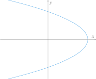
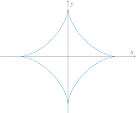

Análisis Matemático
Funciones vectoriales
Universidad CEU San Pablo
Funciones vectoriales de una variable real
Definición 1 (Función vectorial de una variable real) Una función vectorial de una variable real o campo vectorial de una variable escalar es una función que asocia cada valor escalar \(t\in D\subseteq \mathbb{R}\) con un vector \((f_1(t),\ldots,f_n(t))\) en \(\mathbb{R}^n\):
\[ \begin{array}{rccl} \mathbf{f}: & \mathbb{R} & \longrightarrow & \mathbb{R}^n \\ & t & \longrightarrow & (f_1(t),\ldots, f_n(t)) \end{array} \]
donde \(f_i(t)\), \(i=1,\ldots,n\), son funciones reales de una variable real conocidas como funciones coordenadas o funciones componentes.
Los campos vectoriales más habituales se dan en plano real \(\mathbb{R}^2\), donde también se suelen representar así
\[ \mathbf{f}(t) = x(t)\mathbf{i}+y(t)\mathbf{j}, \]
y en el espacio real \(\mathbb{R}^3\), donde se representan así
\[ \mathbf{f}(t) = x(t)\mathbf{i}+y(t)\mathbf{j}+z(t)\mathbf{k}, \]
siendo \(\mathbf{i}\), \(\mathbf{j}\) y \(\mathbf{k}\) los vectores coordenados.
Representación gráfica de una función vectorial
Las representaciones gráficas de las funciones vectoriales se conocen como trayectorias o curvas.
Trayectoria de una función vectorial en el plano real.

Trayectoria de una función vectorial en el plano real.
Trayectoria de una función vectorial en el espacio real.
Una curva puede ser la trayectoria de más de una función vectorial, es decir, una misma trayectoria puede tener distintas parametrizaciones, aunque siempre se puede pasar de una a otra mediante un cambio de variable.
Ejemplo 1 Las función vectorial \(\mathbf{f}(t)=(\operatorname{sen}(t),\cos(t))\) describe la misma trayectoria en el intervalo \(t\in[0,2\pi]\), que la función \(\mathbf{g}(x) = (\operatorname{sen}(2x), \cos(2x))\) en el intervalo \(x\in[0,\pi]\). Se puede pasar de la primera parametrización a la segunda mediante el cambio de variable \(t=2x\), y de la segunda a la primera mediante el cambio de variable \(x=t/2\).
Límite de una función vectorial
Definición 2 Dada una función vectorial \(\mathbf{f}(t)=(f_1(t),\ldots,f_n(t))\) en \(\mathbb{R}^n\), se define el límite de \(\mathbf{f}\) cuando \(t\) se aproxima a \(a\) como el vector
\[ \lim_{t\to a} \mathbf{f}(t) = \left(\lim_{t\to a} f_1(t), \ldots, \lim_{t\to a} f_n(t)\right), \]
siempre que existan los límites de las funciones componentes.
Ejemplo 2 El límite de la función vectorial \(\mathbf{f}(t)=\left(t^2+1, \frac{\operatorname{sen}(t)}{t}, t\cos\left(\frac{1}{t}\right)\right)\) es
\[\begin{align*} \lim_{t\to 0} \mathbf{f}(t) &= \lim_{t\to 0}\left(t^2+1, \frac{\operatorname{sen}(t)}{t}, t\cos\left(\frac{1}{t}\right)\right) \\ &= \left(\lim_{t\to 0} t^2+1, \lim_{t\to 0} \frac{\operatorname{sen}(t)}{t}, \lim_{t\to 0} t\cos\left(\frac{1}{t}\right)\right) \\ &= (1, 1, 0) \end{align*}\]
Continuidad de una función vectorial
Definición 3 Dada una función vectorial \(\mathbf{f}(t)=(f_1(t),\ldots,f_n(t))\) en \(\mathbb{R}^n\), se dice que \(\mathbf{f}\) es continua en \(t=a\) si
\[ \lim_{t\to a} \mathbf{f}(t) = \mathbf{f}(a). \]
Proposición 1 Una función vectorial \(\mathbf{f}(t)=(f_1(t),\ldots,f_n(t))\) en \(\mathbb{R}^n\) es continua en \(t=a\) si y solo si sus funciones componentes son continuas en \(t=a\).
Derivada de una función vectorial
Definición 4 (Derivada de una función vectorial) Se dice que una función vectorial \(\mathbf{f}(t)\) en \(\mathbb{R}^n\) es derivable o diferenciable en un punto \(t=a\) si existe el límite
\[ \lim_{\Delta t\rightarrow 0} \frac{\mathbf{f}(a+\Delta t)-\mathbf{f}(a)}{\Delta t}. \]
En tal caso, el valor del límite se conoce como derivada de la función vectorial en el punto \(a\) y se representa por \(\mathbf{f}'(a)\) o bien \(\frac{d\mathbf{f}}{dt}\).
Teorema 1 Dada una función vectorial \(\mathbf{f}(t)=(f_1(t),\ldots,f_n(t))\) en \(\mathbb{R}^n\), si \(f_i(t)\) es derivable en \(t=a\) para cada \(i=1,\ldots,n\), entonces \(\mathbf{f}\) es derivable en \(a\) y su derivada vale
\[ \mathbf{f}'(a)=(f_1'(a),\ldots,f_n'(a)) \]
Ejemplo 3 La derivada de la función vectorial \(\mathbf{f}(t)= (\ln(t^2), t^3-t, e^{t/2})\) es
\[ \mathbf{f}'(t) = ((\ln(t^2))', (t^3-t)', (e^{t/2})') = \left(\frac{2}{t}, 3t^2-1, \frac{1}{2}e^{t/2}\right). \]
En particular, en el instante \(t=1\) vale
\[ \mathbf{f}'(1) = \left(\frac{2}{1}, 3\cdot 1^2-1, \frac{1}{2}e^{1/2}\right) = \left(2, 2, \frac{\sqrt{e}}{2}\right). \]
Proposición 2 Si \(\mathbf{f}(t)\) y \(\mathbf{g}(t)\) son dos funciones vectoriales derivables, y \(f(t)\) es una función real derivable, entonces
\((\mathbf{f}(t)+\mathbf{g}(t))' = \mathbf{f}'(t) + \mathbf{g}'(t)\).
\((c \mathbf{f}(t))' = c \mathbf{f}'(t) \forall c\in\mathbb{R}\).
\((f(t)\mathbf{f}(t))' = f'(t)\mathbf{f}(t) + f(t)\mathbf{f}'(t)\).
\((\mathbf{f}(t)\cdot \mathbf{g}(t)))' = \mathbf{f}'(t)\cdot \mathbf{g}(t) + \mathbf{f}(t) \cdot \mathbf{g}'(t)\).
\((\mathbf{f}(t)\times \mathbf{g}(t)))' = \mathbf{f}'(t)\times \mathbf{g}(t) + \mathbf{f}(t) \times \mathbf{g}'(t)\).
Teorema 2 (Regla de la cadena de funciones vectoriales) Si \(f(t)\) es una función real derivable en \(t=a\) y \(\mathbf{f}(t)\) es una función vectorial derivable en \(t=f(a)\), entonces
\[ (\mathbf{f}\circ f)'(a) = \mathbf{f}'(f(a))f'(a). \]
Definición 5 (Curva suave) Se dice que la trayectoria de una función vectorial \(\mathbf{f}(t)\) en \(\mathbb{R}^n\) es una curva suave en el intervalo \(I=(a,b)\) si \(\mathbf{f}'(t)\) es continua y no nula \(\forall t\in I\).


Recta tangente a una trayectoria en el plano real
Vector secante a una trayectoria en el espacio real.
Vector derivada tangente a una trayectoria en el espacio real.
Definición 6 (Recta tangente a una trayectoria en el plano real) Dada una función vectorial \(\mathbf{f}(t)=(x(t),y(t))\) en el plano real \(\mathbb{R}^2\), se llama recta tangente a la trayectoria de \(\mathbf{f}\) en \(t=a\), a la recta de ecuación vectorial
\[\begin{align*} (x(t),y(t)) &= \mathbf{f}(a)+t\mathbf{f}'(a) = (x(a),y(a))+t(x'(a),y'(a)) \\ & = (x(a)+tx'(a),y(a)+ty'(a)). \end{align*}\]
De la ecuación vectorial de la recta tangente a la trayectoria de \(\mathbf{f}\) en \(t=a\), se obtiene que sus funciones cartesianas son
\[ \begin{cases} x(t) = x(a) + tx'(a) \\ y(t) = y(a) + ty'(a) \end{cases} \quad t\in \mathbb{R}, \]
y despejando \(t\) en ambas ecuaciones e igualando se llega a la ecuación cartesiana de la recta tangente
\[ \frac{x-x(a)}{x'(a)}=\frac{y-y(a)}{y'(a)}, \]
si \(x'(a)\neq 0\) e \(y'(a)\neq 0\).
Desde esta ecuación es fácil pasar a la ecuación en la forma punto-pendiente.
\[ y-y(a)=\frac{y'(a)}{x'(a)}(x-x(a)). \]
Ejemplo 4 Dada la función vectorial \(\mathbf{f}(t) = (\cos(t),\operatorname{sen}(t))\), \(t\in \mathbb{R}\), cuya trayectoria es la circunferencia unitaria centrada en el origen de coordenadas, sus funciones coordenadas son \(x(t) = \cos(t)\), \(y(t) = \operatorname{sen}(t)\), \(t\in \mathbb{R}\), y su derivada es
\[ \mathbf{f}'(t) = (x'(t),y'(t)) = (-\operatorname{sen}(t), \cos(t)). \]
En el instante \(t=\pi/4\) la función vectorial vale \(\mathbf{f}(\pi/4) = (\cos(\pi/4),\operatorname{sen}(\pi/4)) =(\sqrt{2}/2,\sqrt{2}/2)\) y el vector tangente \(\mathbf{f}'(\pi/4)=(-\operatorname{sen}(\pi/4),\cos(\pi/4))=(-\sqrt{2}/2,\sqrt{2}/2)\), de manera que la recta tangente a la trayectoria de \(\mathbf{f}\) en ese instante es
\[\begin{align*} (x(t),y(t)) &= \mathbf{f}(\pi/4)+t\mathbf{f}'(\pi/4) \\ &= \left(\frac{\sqrt{2}}{2},\frac{\sqrt{2}}{2}\right)+t\left(\frac{-\sqrt{2}}{2},\frac{\sqrt{2}}{2}\right) \\ &= \left(\frac{\sqrt{2}}{2}-t\frac{\sqrt{2}}{2},\frac{\sqrt{2}}{2}+t\frac{\sqrt{2}}{2}\right). \end{align*}\]
Su ecuación cartesiana es
\[ \frac{x-\sqrt{2}/2}{-\sqrt{2}/2} = \frac{y-\sqrt{2}/2}{\sqrt{2}/2}\Rightarrow y-\sqrt{2}/2 = \frac{-\sqrt{2}/2}{\sqrt{2}/2}(x-\sqrt{2}/2) \Rightarrow y=-x+\sqrt{2}, \]
y la ecuación punto-pendiente es
\[ y-\sqrt{2}/2 = \frac{-\sqrt{2}/2}{\sqrt{2}/2}(x-\sqrt{2}/2) \Rightarrow y=-x+\sqrt{2}. \]
Recta tangente a una trayectoria circular en el plano.
Recta normal a una trayectoria en el plano real
Definición 7 (Recta normal a una trayectoria en el plano real) Dada una función vectorial \(\mathbf{f}(t)=(x(t),y(t))\) sobre el plano real \(\mathbb{R}^2\), se llama recta normal a la trayectoria de \(\mathbf{f}\) en \(t=a\) a la recta de ecuación
\[ (x(t),y(t)) = (x(a),y(a))+t(y'(a),-x'(a)) = (x(a)+ty'(a),y(a)-tx'(a)). \]
Su ecuación cartesiana es
\[ \frac{x-x(a)}{y'(a)} = \frac{y-y(a)}{-x'(a)}, \]
y su ecuación en la forma punto pendiente
\[ y-y(a) = \frac{-x'(a)}{y'(a)}(x-x(a)). \]
La recta normal es perpendicular a la recta tangente ya que sus vectores directores son ortogonales.
Ejemplo 5 Siguiendo con el ejemplo de la trayectoria circular de la función vectorial \(\mathbf{f}(t) = (\cos(t),\operatorname{sen}(t))\), \(t\in \mathbb{R}\), la ecuación vectorial de la recta normal en el instante \(t=\pi/4\) es
\[\begin{align*} (x(t),y(t)) &= (\cos(\pi/4),\operatorname{sen}(\pi/4)) + t(\cos(\pi/4),\operatorname{sen}(\pi/4)) \\ &= \left(\frac{\sqrt{2}}{2},\frac{\sqrt{2}}{2}\right)+t\left(\frac{\sqrt{2}}{2},\frac{\sqrt{2}}{2}\right) \\ &=\left(\frac{\sqrt{2}}{2}+t\frac{\sqrt{2}}{2},\frac{\sqrt{2}}{2}+t\frac{\sqrt{2}}{2}\right), \end{align*}\]
su ecuación cartesiana es
\[ \frac{x-\sqrt{2}/2}{\sqrt{2}/2} = \frac{y-\sqrt{2}/2}{\sqrt{2}/2}, \]
y la ecuación punto-pendiente
\[ y-\sqrt{2}/2 = \frac{\sqrt{2}/2}{\sqrt{2}/2}(x-\sqrt{2}/2) \Rightarrow y=x. \]
Recta normal a una trayectoria circular en el plano.
Un caso particular de las rectas tangente y normal a una trayectoria en el plano son la rectas tangente y normal a una función real de una variable real. Si se tiene la función \(y=f(x)\), \(x\in I\subseteq \mathbb{R}\), una función vectorial cuya trayectoria traza la gráfica de \(\mathbf{f}\) es
\[ \mathbf{f}(x) = (x,f(x)) \quad x\in \mathbb{R}. \]
Su derivada es
\[ \mathbf{f}'(x) = (1,f'(x)), \]
de manera que la recta tangente a \(\mathbf{f}\) en \(t=a\) es
\[ \frac{x-a}{1} = \frac{y-f(a)}{f'(a)} \Rightarrow y-f(a) = f'(a)(x-a), \]
y la recta normal es
\[ \frac{x-a}{f'(a)} = \frac{y-f(a)}{-1} \Rightarrow y-f(a) = \frac{-1}{f'(a)}(x-a). \]
Ejemplo 6 Dada la función \(y=f(x)=x^2\), la función vectorial cuya trayectoria traza la gráfica de esta función es \(\mathbf{f}(t)=(t,t^2)\) y su vector tangente es \(\mathbf{f}'(t)=(1,2t)\), de modo que en el punto \((1,1)\), que se alcanza en el instante \(t=1\), la recta tangente es
\[ \frac{x-1}{1} = \frac{y-1}{2} \Rightarrow y-1 = 2(x-1) \Rightarrow y = 2x-1, \]
y la recta normal es
\[ \frac{x-1}{2} = \frac{y-1}{-1} \Rightarrow y-1 = \frac{-1}{2}(x-1) \Rightarrow y = \frac{-x}{2}+\frac{3}{2}. \]
Recta tangente a una trayectoria en el espacio real
Definición 8 (Recta tangente a una trayectoria en el espacio real) Dada una función vectorial \(\mathbf{f}(t)=(x(t),y(t),z(t))\) en el espacio real \(\mathbb{R}^3\), se llama recta tangente a la trayectoria de \(\mathbf{f}\) en \(t=a\), a la recta de ecuación vectorial
\[\begin{align*} (x(t), y(t), z(t)) &= f(a)+tf'(a) = (x(a), y(a), z(a)) + t(x'(a), y'(a), z'(a)) \\ & = (x(a)+tx'(a), y(a)+ty'(a), z(a)+tz(a)). \end{align*}\]
Sus ecuaciones cartesianas son
\[ \frac{x-x(a)}{x'(a)}=\frac{y-y(a)}{y'(a)}=\frac{z-z(a)}{z'(a)}, \]
siempre que \(x'(a)\neq 0\), \(y'(a)\neq 0\) y \(z'(a)\neq 0\).
Ejemplo 7 Dada la función vectorial \(\mathbf{f}(t)=(\cos(t), \operatorname{sen}(t), t)\), \(t\in \mathbb{R}\) en el espacio real, en el instante \(t=\pi/2\), la trayectoria pasará por el punto
\[ \mathbf{f}(\pi/2)=(\cos(\pi/2),\sin(\pi/2),\pi/2)=(0,1,\pi/2), \]
y su derivada vale
\[ \mathbf{f}'(\pi/2)=(-\sin(\pi/2),\cos(\pi/2), 1)=(-1,0,1), \]
de manera que la recta tangente a la trayectoria de \(\mathbf{f}\) en ese instante es
\[ (x(t),y(t),z(t))=(0,1,\pi/2)+t(-1,0,1) = (-t,1,t+\pi/2). \]
Recta tangente a una trayectoria en el espacio.
Plano normal a una trayectoria en el espacio
En el espacio tridimensional \(\mathbb{R}^3\), la recta normal a una trayectoria no es única, sino que hay infinitas, todas ellas en el mismo plano, por lo que en vez de hablar de recta normal a la trayectoria, se habla de plano normal a la trayectoria.
Definición 9 (Plano normal a una trayectoria en el espacio real) Dada una función vectorial \(\mathbf{f}(t)=(x(t),y(t),z(t))\) en el espacio real \(\mathbb{R}^3\), se llama plano normal a la trayectoria de \(\mathbf{f}\) en \(t=a\), al plano de ecuación
\[ x'(a)(x-x(a))+y'(a)(y-y(a))+z'(a)(z-z(a))=0. \]
Ejemplo 8 Para la trayectoria de la función vectorial del ejemplo anterior \(\mathbf{f}(t)=(\cos(t), \operatorname{sen}(t), t)\), \(t\in \mathbb{R}\), en el instante \(t=\pi/2\) la trayectoria pasa por el punto
\[ \mathbf{f}(\pi/2)=(\cos(\pi/2),\operatorname{sen}(\pi/2),\pi/2)=(0,1,\pi/2), \]
con derivada
\[ \mathbf{f}'(\pi/2)=(-\operatorname{sen}(\pi/2),\cos(\pi/2), 1)=(-1,0,1), \]
y el plano normal a la trayectoria de \(\mathbf{f}\) en ese instante tiene ecuación
\[ \left(x-0,y-1,z-\frac{\pi}{2}\right)(-1,0,1) =0 \Leftrightarrow -x+z-\frac{\pi}{2}=0. \]
Integral de una función vectorial
Al igual que la derivada, el concepto de integral se puede extender de funciones reales a funciones vectoriales de forma natural, expresando la integral en términos de las integrales de las funciones componentes. El teorema fundamental del Cálculo también se cumple para funciones vectoriales.
Definición 10 Dada una función vectorial \(\mathbf{f}(t)\) en \(\mathbb{R}^n\), se dice que una función vectorial \(\mathbf{F}(t)\) es una primitiva de \(\mathbf{f}(t)\) si se cumple que \(\mathbf{F}'(t) = \mathbf{f}(t)\).
Observación
Si \(\mathbf{F}(t)\) es una primitiva de \(\mathbf{f}(t)\) en \(\mathbb{R}^n\), también lo es la función vectorial \(\mathbf{F}(t)+\mathbf{C}\), para cualquier vector constante \(C\) en \(\mathbb{R}^n\).
Definición 11 Dada una función vectorial \(\mathbf{f}(t)\) en \(\mathbb{R}^n\), se define la integral indefinida de \(\mathbf{f}(t)\) como
\[ \int \mathbf{f}(t)\, dt = \mathbf{F}(t) + \mathbf{C}, \]
donde \(\mathbf{F}(t)\) es cualquier función vectorial primitiva de \(\mathbf{f}(t)\) y \(\mathbf{C}\) es un vector constante en \(\mathbb{R}^n\).
Teorema 3 Si \(\mathbf{f}(t)=(f_1(t), \ldots, f_n(t))\) es una función vectorial integrable en \(\mathbb{R}^n\) entonces
\[ \int \mathbf{f}(t)\, dt = \left(\int f_1(t)\, dt, \ldots, \int f_n(t)\,dt\right). \]
Demostración
Prueba. Supongamos que \(\mathbf{F}(t)=(F_1(t),\ldots,F_n(t))\) es una primitiva de \(\mathbf{f}(t)=(f_1(t), \ldots, f_n(t))\).Entonces,
\[ \left(\int f_1(t)\, dt, \ldots, \int f_n(t)\,dt\right) = (F_1(t)+C_1,\ldots, F_n(t)+C_n) = \mathbf{F}(t)+\mathbf{C} = \int \mathbf{f}(t)\, dt, \]
donde \(C_1,\ldots,C_n\) son escalares constantes y \(\mathbf{C}=(C_1,\ldots, C_n)\).
Ejemplo 9 La integral indefinida de la función \(\mathbf{f}(t) = (3t+1) \mathbf{i} + \operatorname{sen}(t) \mathbf{j} + e^{2x} \mathbf{k}\) es
\[\begin{align*} \int \mathbf{f}(t)\, dt &= \int 3t+1\ dt \mathbf{i} + \int \operatorname{sen}(t)\ dt \mathbf{j} + \int e^{2x}\ dt \mathbf{k} \\ &= \left(\frac{3}{2}t^2+t\right) \mathbf{i} - \cos(t) \mathbf{j} + \frac{e^{2x}}{2} \mathbf{k}. \end{align*}\]
Definición 12 Dada una función vectorial \(\mathbf{f}(t)=(f_1(t),\ldots, f_n(t))\) en \(\mathbb{R}^n\), con \(f_1(t),\ldots,f_n(t)\) funciones integrables Riemann en \(I=[a,b]\), se define la integral definida de \(\mathbf{f}(t)\) en \(I\) como
\[ \int_a^b \mathbf{f}(t)\, dt = \left(\int_a^b f_1(t)\, dt, \ldots, \int_a^b f_n(t)\,dt\right). \]
Longitud de la trayectoria de una función vectorial
Un problema habitual cuando se trabaja con funciones vectoriales es averiguar la longitud de su trayectoria.
Para medir la longitud de arco de la curva que describe una función vectorial \(\mathbf{f}(t)=(f_1(t),\ldots,f_n(t))\) en el intervalo \(t\in[a,b]\) podemos seguir la misma estrategia que usamos para medir la longitud de la gráfica de una función real, descomponiendo la trayectoria en los tramos correspondientes a una partición del intervalo \([a,b]\) en \(m\) subintervalos \(\mathcal{P}_m = \{t_0=a, t_1, \ldots, t_m=b\}\). Cada uno de los tramos puede aproximarse por un segmento \(\mathbf{f}(t_i)-\mathbf{f}(t_{i-1})\), de manera que la longitud de la trayectoria puede aproximarse mediante la suma
\[ \sum_{i=1}^m |\mathbf{f}(t_i)-\mathbf{f}(t_{i-1})|. \]
Resulta evidente que a medida que se toman refinamientos sucesivos de la partición, esta aproximación será mejor, de manera que podemos llegar a obtener la longitud exacta de la curva tomando el límite cuando \(m\to\infty\), es decir,
\[ \lim_{m\to\infty}\sum_{i=1}^m |\mathbf{f}(t_i)-\mathbf{f}(t_{i-1})|. \]
Ahora bien, como
\[\begin{align*} \mathbf{f}(t_i)-\mathbf{f}(t_i-1) &= (f_1(t_i),\ldots,f_n(t_i))-(f_1(t_{i-1}),\ldots,f_n(t_{i-1})) \\ &= (f_1(t_i)-f_1(t_{i-1}),\ldots,f_n(t_i)-f_n(t_{i-1})) \end{align*}\]
se tiene que
\[ \lim_{m\to\infty}\sum_{i=1}^m |\mathbf{f}(t_i)-\mathbf{f}(t_{i-1})| = \lim_{m\to\infty}\sum_{i=1}^m \sqrt{\sum_{j=1}^n (f_j(t_i)-f_j(t_{i-1}))^2}. \]
Por otro lado, si las funciones componentes \(f_j(t)\) son continuas en \([a,b]\) y diferenciables en \((a,b)\), el teorema del valor medio asegura que existe un valor \(t_{ij}\in(t_{i-1},t_i)\) tal que
\[ f_j(t_i)-f_j(t_{i-1}) = f_j'(t_{ij})(t_i-t_{i-1}) = f_j'(t_{ij}) \Delta t, \]
de manera que la expresión anterior se puede escribir
\[\begin{align*} \lim_{m\to\infty}\sum_{i=1}^m |\mathbf{f}(t_i)-\mathbf{f}(t_{i-1})| &= \lim_{m\to\infty}\sum_{i=1}^m \sqrt{\sum_{j=1}^n (f_j'(t_{ij})\Delta t)^2} \\ &= \lim_{m\to\infty}\sum_{i=1}^m \sqrt{\sum_{j=1}^n (f_j'(t_{ij}))^2}\Delta t. \end{align*}\]
Esta última suma se parece a una suma de Riemann, aunque los \(t_{ij}\), en general, pueden ser distintos para cada función componente \(f_j\). No obstante, al ir tomando particiones cada vez más refinadas, en el límite cuando \(n\to\infty\), los intervalos \((t_{i-1},t_i)\) acaban colapsando en un único punto, por lo que este límite puede expresarse como la integral de Riemann
\[\begin{align*} \lim_{m\to\infty}\sum_{i=1}^m |\mathbf{f}(t_i)-\mathbf{f}(t_{i-1})| &= \lim_{m\to\infty}\sum_{i=1}^m \sqrt{\sum_{j=1}^n (f_j'(t))^2}\Delta t. \\ &= \int_a^b \sqrt{\sum_{j=1}^n (f_j'(t_{ij}))^2}\, dt \\ &= \int_a^b |\mathbf{f}'(t)|\, dt \end{align*}\]
Así pues, podemos definir la longitud de una trayectoria de una función vectorial de esta manera.
Definición 13 (Longitud de la trayectoria de una función vectorial) Dada una función vectorial \(\mathbf{f}(t)\) en \(\mathbb{R}^n\), tal que \(\mathbf{f}'(t)\) es continua en el intervalo \(I=[a,b]\), se define la longitud de la trayectoria de \(\mathbf{f}\) en \(I\) como
\[ \int_a^b |\mathbf{f}'(t)|\, dt, \]
siempre y cuando la trayectoria se recorra exactamente una vez para \(t\in[a,b]\).
Ejemplo 10 Veamos cuánto mide la trayectoria descrita por la función vectorial \(\mathbf{f}(t)=(\cos(t),\operatorname{sen}(t), t)\) en el intervalo \([0,2\pi]\).
\[\begin{align*} \int_0^{2\pi} |\mathbf{f}'(t)|\, dt &= \int_0^{2\pi} |(-\operatorname{sen}(t), \cos(t), 1)|\, dt \\ &= \int_0^{2\pi} \sqrt{(-\operatorname{sen}(t))^2 + \cos(t)^2 + 1^2}\,dt \\ &= \int_0^{2\pi} \sqrt{2}\, dt = [\sqrt{2}x]_0^{2\pi} = 2\sqrt{2}\pi. \end{align*}\]
En ocasiones es interesante parametrizar una trayectoria con respecto a su longitud, que no depende de un sistema de coordenadas particular. Para ello se puede utilizar la siguiente función.
Definición 14 (Función longitud de arco de una trayectoria) Dada una función vectorial \(\mathbf{f}(t)\) en \(\mathbb{R}^n\), tal que \(\mathbf{f}'(t)\) es continua en el intervalo \(I=[a,b]\), se define la funcion longitud de arco de \(\mathbf{f}\) en \(I\) como
\[ s(t) = \int_a^t |\mathbf{f}'(x)|\, dx, \]
siempre y cuando la trayectoria de \(\mathbf{f}\) se recorra exactamente una vez para \(t\in[a,b]\).
A partir de la función longitud de arco se puede reparametrizar \(\mathbf{f}(t)\) como \(\mathbf{f}(t(s))\), donde \(t(s)\) es la función inversa de \(s(t)\). A esta parametrización de la trayectoria se le conoce como parametrización de la longitud de arco.
Definición 15 (Parametrización longitud de arco de una trayectoria) Dada una trayectoria de función vectorial \(\mathbf{f}(t)\) en \(\mathbb{R}^n\), tal que \(\mathbf{f}'(t)\) es continua en el intervalo \(I=[a,b]\). Se define la parametrización de la longitud de arco de la trayectoria como la función vectorial
\[ \tilde{\mathbf{f}}(s) = \mathbf{f}(t(s)), \]
donde \(t(s)\) es la inversa de la función longitud de arco de \(\mathbf{f}\).
Ejemplo 11 La función vectorial \(\mathbf{f}(t)=(3t+1, 4t-2)\) traza la siguiente gráfica en el intervalo \(t\in[0,2]\).
La función longitud de arco de esta función vectorial es
\[ s(t) = \int_0^t |\mathbf{f}'(x)|\,dx = \int_0^t |(3,4)|\,dx = \int_0^t \sqrt{25}\,dx = \int_0^t 5 \,dx = [5x]_0^t = 5t. \]
Así que, tomando la función inversa \(t=s/5\), y haciendo el cambio de variable en la parametrización anterior, obtenemos la parametrización longitud de arco de esta trayectoria.
\[ \mathbf{f}(t) = \mathbf{f}(s/5) = \left(\frac{3}{5}s+1, \frac{4}{5}s-2\right) = \tilde{\mathbf{f}}(s). \]
Proposición 3 Si \(\mathbf{f}(t)\) es una función vectorial que admite una parametrización de longitud de arco de su trayectoria, entonces \(\tilde{\mathbf{f}}'(s)\) es un vector unitario.
Demostración
Prueba. Sea \(s\) el parámetro dado por la función longitud de arco de la trayectoria de la función vectorial \(\mathbf{f}(t)\) para \(t\in[a,b]\), es decir,
\[ s(t) = \int_a^t |\mathbf{f}'(x)|\, dx. \]
Entonces, por el teorema fundamental del cálculo para funciones vectoriales se tiene que
\[ \frac{ds}{dt} = s'(t) = |\mathbf{f}'(t)|. \]
Por otro lado, al realizar el cambio de variable para parametrizar la función vectorial mediante la longitud de arco, al aplicar la regla de la cadena se tiene
\[ \tilde{\mathbf{f}}'(s) = (\mathbf{f}\circ t)'(s) = \mathbf{f}'(t(s)) t'(s) = \frac{d\mathbf{f}}{dt}\frac{dt}{ds} = \frac{\frac{d\mathbf{f}}{dt}}{\frac{ds}{dt}} = \frac{\mathbf{f}'(t)}{\mathbf{s}'(t)} = \frac{\mathbf{f}'(t)}{|\mathbf{f}'(t)|}, \]
y por tanto,
\[ |\tilde{\mathbf{f}}'(s)| = \left|\frac{\mathbf{f}'(t)}{|\mathbf{f}'(t)|}\right| = \frac{|\mathbf{f}'(t)|}{|\mathbf{f}'(t)|} = 1. \]
Una de las ventajas de la parametrización de longitud de arco de la trayectoria de una función vectorial \(\mathbf{f}(s)\), es que la longitud de la trayectoria en el intervalo \(s\in[a,b]\) es \(b-a\), ya que
\[ \int_a^b |\mathbf{f}'(s)|\,ds = \int_a^b 1\,dx = [s]_a^b = b-a. \]
Curvatura
Otro aspecto importante de una trayectoria es su curvatura, que nos permite ver cómo de rápido gira una curva. Si pensamos en la trayectoria que describe una carretera, en un tramo recto no hay curvatura, y por tanto, no tendremos que girar el volante, mientras que en una curva si que habrá que girar el volante para trazar la curva. Cuanto mayor sea la curvatura de la trayectoria de la carretera, más rápido tendremos que girar el volante para cambiar la dirección del vehículo.
Para estudiar la curvatura de la trayectoria de una función vectorial \(\mathbf{f}(t)\), analizaremos la variación que experimenta la dirección del vector tangente a la trayectoria, que recordemos es \(\mathbf{f}'(t)\), y por tanto, vendrá dada por la segunda derivada \(\mathbf{f}''(t)\). Sin embargo, este valor depende de la parametrización de la trayectoria.
Ejemplo 12 Ya hemos visto que la función vectorial \(\mathbf{f}(t)=(\cos(t),\operatorname{sen}(t))\) describe una trayectoria circular de radio 1 centrada en el origen. Su derivada vale \(\mathbf{f}'(t)=(-\operatorname{sen}(t),\cos(t))\) y su segunda derivada \(\mathbf{f}''(t)=(-\cos(t),-\operatorname{sen}(t))\), que tiene módulo \(|\mathbf{f}''(t)| = \sqrt{(-\cos(t))^2+(-\operatorname{sen}(t))^2} = 1\) para cualquier valor de \(t\).
Sin embargo, si tomamos una parametrización distinta \(\mathbf{g}(t)=(\cos(2t), \operatorname{sen}(2t))\) de esta misma trayectoria, se tiene que \(\mathbf{g}'(t)=(-2\operatorname{sen}(2t),2\cos(2t))\) y \(\mathbf{g}''(t)=(-4\cos(2t), -4\operatorname{sen}(2t))\), que tiene módulo \(|\mathbf{g}''(t)| = \sqrt{(-4\cos(t))^2+(-4\operatorname{sen}(t))^2} = 4\) para cualquier valor de \(t\).
Así pues, para hacer independiente la curvatura de una trayectoria de su parametrización, utilizaremos la parametrización de la longitud de arco.
Definición 16 (Curvatura de una trayectoria) Dada una función vectorial \(\mathbf{f}(t)\) en \(\mathbb{R}^n\), se define la curvatura de su trayectoria como
\[ \kappa(s) = |\tilde{f}''(s)| \]
El inconveniente de esta definición es que nos obliga a usar la parametrización longitud de arco, que, a su vez, requiere calcular la longitud de arco de la trayectoria, lo cual no siempre es fácil. Afortunadamente, es posible calcular la curvatura de la trayectoria de cualquier función vectorial \(\mathbf{f}(t)\) sin necesidad de hacer el cambio a la parametrización longitud de arco. Para ello necesitamos normalizar el vector velocidad.
Definición 17 (Vector tangente unitario de una función vectorial) Dada una función vectorial \(\mathbf{f}(t)\) en \(\mathbb{R}^n\), se llama vector tangente unitario de \(\mathbf{f}\) al vector
\[ \mathbf{T}(t) = \frac{\mathbf{f}'(t)}{|\mathbf{f}'(t)|}. \]
Teorema 4 Si \(\mathbf{f}(t)\) es una función vectorial en \(\mathbb{R}^n\) entonces la curvatura de su trayectoria es
\[ \kappa(t) = \frac{|\mathbf{T}'(t)|}{|\mathbf{f}'(t)|}, \]
donde \(\mathbf{T}'(t)\) es el vector tangente unitario de \(\mathbf{f}(t)\).
Demostración
Prueba. Sea \(s(t)\) la función longitud de arco de la trayectoria de \(\mathbf{f}(t)\) y \(\tilde{\mathbf{f}}(s)\) su parametrización longitud de arco. Entonces,
\[\begin{align*} \tilde{\mathbf{f}}''(s) &= \frac{d}{ds}\left(\frac{d\tilde{\mathbf{f}}}{ds}\right) = \frac{d}{ds}\left(\frac{d(\mathbf{f}\circ t)}{ds}\right) \\ &= \frac{d}{ds}\left(\frac{d\mathbf{f}}{dt}\frac{dt}{ds}\right) = \frac{d}{ds}\left(\frac{d\mathbf{f}/dt}{ds/dt}\right) \tag{Regla cadena} \\ &= \frac{d}{ds}\left(\frac{\mathbf{f}'(t)}{|\mathbf{f}'(t)|}\right) = \frac{d}{ds}(\mathbf{T}(t)) \\ &= \frac{dT}{dt}\frac{dt}{ds} = \frac{dT/dt}{ds/dt} \tag{Regla cadena} \\ &= \frac{\mathbf{T}'(t)}{|\mathbf{f}'(t)|}. \end{align*}\]
Y por tanto,
\[ \kappa(s) = |\tilde{\mathbf{f}}''(s)| = \frac{|\mathbf{T}'(t)|}{|\mathbf{f}'(t)|}. \]
Ejemplo 13 Veamos cuál es la curvatura de la espiral que describe la función vectorial \(\mathbf{f}(t)=(\cos(t),\operatorname{sen}(t),t)\). Su primera derivada vale \(\mathbf{f}'(t)=(-\operatorname{sen}(t),\cos(t),1)\), y su módulo es \(|\mathbf{f}'(t)| = \sqrt{(-\operatorname{sen}(t))^2+\cos(t)^2+1^2} = \sqrt{2}\), de manera que el vector tangente unitario es
\[ T(t) = \frac{\mathbf{f}'(t)}{|\mathbf{f}'(t)|} = \frac{1}{\sqrt{2}}(-\operatorname{sen}(t),\cos(t),1). \]
Así pues, su curvatura es
\[\begin{align*} \kappa(t) &= \frac{|\mathbf{T}'(t)|}{|\mathbf{f}'(t)|} = \frac{|\frac{1}{\sqrt{2}}(-\cos(t),-\operatorname{sen}(t), 0)|}{\sqrt{2}} \\ &= \frac{\frac{1}{\sqrt{2}}((-\cos(t))^2+(-\operatorname{sen}(t))^2+0^2)}{\sqrt{2}} = \frac{1}{2}. \end{align*}\]
En el caso de una trayectoria en el espacio real \(\mathbb{R}^3\) se puede utilizar la siguiente fórmula, que suele ser más rápida de calcular, para calcular su curvatura.
Teorema 5 Si \(\mathbf{f}(t)\) es una función vectorial en \(\mathbb{R}^3\), entonces la curvatura de su trayectoria vale
\[ \kappa(t) = \frac{|\mathbf{f}'(t)\times \mathbf{f}''(t)|}{|\mathbf{f}'(t)|^3}. \]
Demostración
Prueba. Como el vector tangente unitario de \(\mathbf{f}(t)\) es \(\mathbf{T}(t) = \frac{\mathbf{f}'(t)}{|\mathbf{f}'(t)|}\), se tiene que
\[ \mathbf{f}'(t) = |\mathbf{f}'(t)|\mathbf{T}(t). \]
Por otro lado, si \(s(t)\) es la función longitud de arco de \(\mathbf{f}(t)\), por el teorema fundamental del cálculo vimos que \(s'(t)=|\mathbf{f}'(t)|\), por lo que sustituyendo en la expresión anterior se tiene
\[ \mathbf{f}'(t) = s'(t)\mathbf{T}(t). \]
Así pues,
\[ \mathbf{f}''(t) = (s'(t)\mathbf{T}(t))' = s''(t)\mathbf{T}(t)+s'(t)\mathbf{T}'(t). \]
Si ahora hacemos el producto vectorial de la primera y segunda derivada de \(\mathbf{f}\) se tiene
\[\begin{align*} \mathbf{f}'(t)\times \mathbf{f}''(t) &= (s'(t)\mathbf{T}(t))\times (s''(t)\mathbf{T}(t)+s'(t)\mathbf{T}'(t))\\ &= s'(t)s''(t)(\mathbf{T}(t)\times \mathbf{T}(t)) + s'(t)^2 (\mathbf{T}(t)\times \mathbf{T}'(t)). \end{align*}\]
Ahora bien, como \(\mathbf{T}(t)\times \mathbf{T}(t)=0\), la expresión anterior se simplifica a
\[ \mathbf{f}'(t)\times \mathbf{f}''(t) = s'(t)^2 (\mathbf{T}(t)\times \mathbf{T}'(t)). \]
Y como \(\mathbf{T}(t)\) y \(\mathbf{T}'(t)\) son ortogonales, se cumple que
\[ |\mathbf{T}(t)\times \mathbf{T}'(t)| = |\mathbf{T}(t)||\mathbf{T}'(t)|\operatorname{sen}(\pi/2) = |\mathbf{T}'(t)|, \]
por lo que se tiene
\[ |\mathbf{f}'(t)\times \mathbf{f}''(t)| = s'(t)^2 |\mathbf{T}'(t)|, \]
de donde se deduce
\[ |\mathbf{T}'(t)| = \frac{|\mathbf{f}'(t)\times \mathbf{f}''(t)|}{s'(t)^2} = \frac{|\mathbf{f}'(t)\times \mathbf{f}''(t)|}{|\mathbf{f}'(t)|^2}. \]
Y finalmente, la curvatura es
\[ = \frac{|\mathbf{T}'(t)|}{|\mathbf{f}'(t)|} = \frac{|\mathbf{f}'(t)\times \mathbf{f}''(t)|}{|\mathbf{f}'(t)|^3}. \]
Cinemática: Movimiento curvilíneo
Una de las principales aplicaciones de las funciones vectoriales la encontramos en la Cinemática, que es la rama de la mecánica que estudia el movimiento de los cuerpos.
Vector velocidad
La derivada como velocidad a lo largo de una trayectoria en la recta real puede generalizarse a trayectorias en cualquier espacio euclídeo \(\mathbb{R}^n\).
Para el caso del plano real \(\mathbb{R}^2\), si la función vectorial \(\mathbf{f}(t)\) describe la posición de un objeto móvil en el plano en el instante \(t\), tomando como referencia el origen de coordenadas \(O\) y los vectores coordenados \(\{\mathbf{i}=(1,0),\mathbf{j}=(0,1)\}\), se puede representar la posición \(P\) del móvil en cada instante \(t\) mediante un vector \(\vec{OP}=x(t)\mathbf{i}+y(t)\mathbf{j}\) cuyas coordenadas
\[ \begin{cases} x=x(t) \\ y=y(t) \end{cases} \quad t\in \mbox{Dom}(f) \]
son las funciones coordenadas de \(\mathbf{f}\).
En este contexto, para incrementos pequeños de tiempo, el vector \(\mathbf{f}(t+\Delta t)-\mathbf{f}(t)\) aproxima la dirección del desplazamiento y su módulo la longitud de la trayectoria desde el punto \(\mathbf{f}(t)\) al punto \(\mathbf{f}(t+\Delta t)\), es decir, el espacio recorrido entre estos dos instantes, de manera que el cociente
\[ \frac{\mathbf{f}(t+\Delta t)-\mathbf{f}(t)}{\Delta t} \]
mide la velocidad media durante ese desplazamiento. Tomando el límite para incrementos de tiempo cada vez menores, se obtiene
\[ \lim_{\Delta t\to 0} \frac{\mathbf{f}(t+\Delta t)-\mathbf{f}(t)}{\Delta t} = \mathbf{f}'(t), \]
que es el vector derivada de la función vectorial, y que recordemos es tangente a la trayectoria.
Definición 18 (Vector velocidad) Dada una función vectorial \(\mathbf{f}(t)\) en \(\mathbb{R}^n\) que describe el movimiento de un objeto en función del tiempo \(t\), se llama vector velocidad de \(\mathbf{f}\) al vector
\[ \mathbf{v}(t) = \mathbf{f}'(t). \]
Y se define la rapidez del objeto como la longitud del vector velocidad, es decir, \(|\mathbf{v}(t)|\).
Esta definición tiene sentido ya que \(|v(t)| = |\mathbf{f}'(t)| = \frac{ds}{dt}\), donde \(s(t)\) es la función longitud de arco, y por tanto, mide la variación instantánea del espacio recorrido con respecto al tiempo.
No debe confundirse el vector velocidad \(\mathbf{v}(t)=f'(t)\) con la rapidez del móvil dada por \(|\mathbf{v}(t)|\).
El vector velocidad explica cómo cambia la posición del objeto con respecto al tiempo. Por ejemplo, si tenemos que en un instante \(t=a\) el vector velocidad es \(\mathbf{v}=(1,-2)\), eso indica que la tendencia de cambio del objeto es a avanzar una unidad en eje \(x\) y retroceder dos unidades en el eje \(y\) por cada unidad de tiempo que pase.
Ejemplo 14 El vector velocidad de la función vectorial \(\mathbf{f}(t) = (\cos(t),\operatorname{sen}(t))\), cuya trayectoria es la circunferencia unitaria centrada en el origen de coordenadas, es
\[ \mathbf{v}(t) = \mathbf{f}'(t) = (-\operatorname{sen}(t), \cos(t)). \]
En el instante \(t=\pi/4\), el móvil estará en la posición \(\mathbf{f}(\pi/4) = (\cos(\pi/4),\operatorname{sen}(\pi/4)) =(\sqrt{2}/2,\sqrt{2}/2)\) y se moverá con una velocidad \(\mathbf{v}(\pi/4)=\mathbf{f}'(\pi/4)=(-\operatorname{sen}(\pi/4),\cos(\pi/4))=(-\sqrt{2}/2,\sqrt{2}/2)\).
Obsérvese que el módulo del vector velocidad siempre será 1 ya que
\[ |\mathbf{v}(t)|=\sqrt{(-\operatorname{sen}(t))^2+\cos(t)^2}=1, \]
y por tanto, la velocidad instantánea con la que se mueve el móvil es constante.
Vector aceleración
Del mismo modo que el vector velocidad \(\mathbf{v}(t)=\mathbf{f}'(t)\) explica la variación de la posición de un objeto dada por \(\mathbf{f}(t)\), la segunda derivada \(\mathbf{f}''(t)\) explica la variación de la velocidad \(\mathbf{v}(t)\).
Definición 19 (Vector aceleración) Dada una función vectorial \(\mathbf{f}(t)\) en \(\mathbb{R}^n\) que describe el movimiento de un objeto en función del tiempo \(t\), se llama vector aceleración de \(\mathbf{f}\) al vector derivada del vector velocidad, es decir,
\[ \mathbf{a}(t) = \mathbf{v}'(t) = \mathbf{f}''(t). \]
El vector aceleración explica cómo cambia la velocidad de un objeto móvil, tanto en dirección como en magnitud. De este modo, la trayectoria que describe el objeto siempre se curva en la dirección que indica el vector aceleración.
Ejemplo 15 Siguiendo con el ejemplo anterior de la función vectorial \(\mathbf{f}(t) = (\cos(t),\operatorname{sen}(t))\), cuya trayectoria es la circunferencia unitaria centrada en el origen de coordenadas, hemos visto que el vector velocidad es \(\mathbf{v}(t)=(-\operatorname{sen}(t), \cos(t))\), y por tanto el vector aceleración es
\[ \mathbf{a}(t) = (-\cos(t), -\operatorname{sen}(t)), \]
que es justo el vector opuesto al vector posición \(\mathbf{f}(t)\), por lo que en el caso del movimiento circular uniforme, el vector aceleración siempre apunta hacia el centro de la circunferencia. En particular en el instante \(\pi/4\), se tiene el vector aceleración \(\mathbf{a}(\pi/4)=(-\sqrt{2}/2,-\sqrt{2}/2)\).
En este ejemplo, el vector aceleración resulta ser ortogonal al vector velocidad, pero en general no tiene por qué ser así. Si recordamos el vector unitario tangente a la trayectoria que recorre el objeto, tenemos que \(\mathbf{T}(t) = \frac{\mathbf{f}'(t)}{|\mathbf{f}'(t)|} = \frac{\mathbf{v}(t)}{|\mathbf{v}(t)|}\) y, por tanto, podemos expresar el vector velocidad como \(\mathbf{v}(t)=|\mathbf{v}(t)|\mathbf{T}(t)\). Haciendo la derivada de esta expresión, se llega a
\[ \mathbf{a}(t) = |\mathbf{v}(t)|'\mathbf{T}(t)+|\mathbf{v}(t)|\mathbf{T}'(t). \]
Esta expresión puede reescribirse, a su vez, aprovechando que \(\mathbf{T}'(t)\) es ortogonal a \(\mathbf{T}(t)\), y por tanto, el vector \(\mathbf{N}(t)=\frac{\mathbf{T}'(t)}{|\mathbf{T}'(t)|}\) es un vector unitario ortogonal a la velocidad, por lo que llegamos a
\[ \mathbf{a}(t) = |\mathbf{v}(t)|'\mathbf{T}(t)+|\mathbf{v}(t)||\mathbf{T}'(t)|\mathbf{N}(t). \]
Y finalmente, si recordamos la definición de curvatura que vimos en la sección anterior, \(\kappa(t) = \frac{|\mathbf{T}'(t)|}{|\mathbf{f}'(t)|} = \frac{|\mathbf{T}'(t)|}{|\mathbf{v}(t)|}\), se puede concluir que
\[ \mathbf{a}(t) = |\mathbf{v}(t)|'\mathbf{T}(t)+\kappa(t)|\mathbf{v}(t)|^2\mathbf{N}(t). \]
Esta fórmula descompone el vector aceleración como combinación lineal de los vectores tangente y normal unitarios.
Definición 20 (Componentes tangencial y normal del vector aceleración) Dada una función vectorial \(\mathbf{f}(t)\) en \(\mathbb{R}^n\) que describe el movimiento de un objeto en función del tiempo \(t\), se llama componente tangencial del vector aceleración de \(\mathbf{f}\) a
\[ a_T(t) = |\mathbf{v}(t)|', \]
y se llama componente normal del vector aceleración de \(\mathbf{f}\) a
\[ a_N(t) = \kappa(t)|\mathbf{v}(t)|^2. \]
Usando las componentes tangencial y normal de la aceleración podemos expresarla de la siguiente manera
\[ a(t) = a_T(t)\mathbf{T}(t) + a_N(t)\mathbf{N}(t), \]
donde \(\mathbf{T}(t)\) y \(\mathbf{N}(t)\) son los vectores unitarios tangente y normal a la trayectoria que recorre el objeto.
Según esto, la componente tangencial \(|v(t)|'\), que apunta al igual que el vector velocidad en la misma dirección del movimiento, depende de cómo varía la rapidez con la que se mueve el objeto, pero no de cómo cambia su dirección. Mientras que la componente normal \(\kappa(t)|\mathbf{v}(t)|^2\), depende de la rapidez con la que se mueve el objeto, pero también de la curvatura de la trayectoria que recorre. Esto es fácil de experimentar al conducir un coche por una carretera curva. Cuanto más cerrada sea la curva o cuanto mayor sea la rapidez con la que se toma, mayor será la aceleración en el sentido normal, lo que, como veremos en la próxima sección, se traduce en una mayor fuerza centrífuga que nos empujará hacia la puerta del exterior de la curva.
Ejemplo 16 Veamos cuáles son las componentes tangencial y normal de la aceleración de un objeto que recorre la trayectoria dada por la función vectorial \(f(t)=(t^2,2t)\) en el instante \(t=1\).
El vector velocidad es \(\mathbf{v}(t) = \mathbf{f}'(t) = (2t,2)\), y la rapidez
\[ |\mathbf{v}(t)|=\sqrt{(2t)^2+2^2} = \sqrt{4t^4+4} = 2\sqrt{t^2+1}, \]
por lo que la componente tangencial de la aceleración vale
\[ a_T(t) = |\mathbf{v}(t)|' = \frac{2t}{\sqrt{t^2+1}}, \]
que en \(t=1\) vale \(a_T(1) = \sqrt{2}\).
Por otro lado, el vector tangente unitario es
\[ \mathbf{T}(t) = \frac{\mathbf{v}(t)}{|\mathbf{v}(t)|} = \frac{(2t,2)}{2\sqrt{t^2+1}} = \left(\frac{t}{\sqrt{t^2+1}},\frac{1}{\sqrt{t^2+1}}\right), \]
con derivada
\[ \mathbf{T}'(t) = \left(\frac{1}{t^2\sqrt{t^2+1} + \sqrt{t^2 + 1}}, \frac{-t}{t^2\sqrt{t^2 + 1} + \sqrt{t^2 + 1}} \right) \]
y módulo
\[ |\mathbf{T}'(t)| = \sqrt{\left(\frac{1}{t^2\sqrt{t^2+1} + \sqrt{t^2 + 1}}\right)^2 +\left(\frac{-t}{t^2\sqrt{t^2 + 1} + \sqrt{t^2 + 1}} \right)^2} = \frac{1}{t^2+1}, \]
por lo que la curvatura es
\[ \kappa(t) = \frac{|\mathbf{T}'(t)|}{|\mathbf{f}'(t)|} = \frac{\frac{1}{t^2+1}}{2\sqrt{t^2+1}} = \frac{1}{2(t^2+1)^{3/2}}. \]
Por tanto, la componente normal de la aceleración es
\[ a_N(t) = \kappa(t)|\mathbf{v}(t)|^2 = \frac{1}{2(t^2+1)^{3/2}} (2\sqrt{t^2+1})^2 = \frac{2}{\sqrt{t^2+1}}, \]
que en \(t=1\) vale \(a_N(1)=\frac{2}{\sqrt{2}}=\sqrt{2}\).
Así pues, el vector aceleración es
\[ a(1) = \sqrt{2}\mathbf{T}(1) + \sqrt{2}\mathbf{N}(1) = \sqrt{2}\left(\frac{\sqrt{2}}{2},\frac{\sqrt{2}}{2}\right) + \sqrt{2}\left(\frac{\sqrt{2}}{2},-\frac{\sqrt{2}}{2}\right) = (2, 0). \]
En el caso de una función vectorial en el espacio real \(\mathbb{R}^3\), el cálculo de las componentes tangencial y normal de la aceleración se puede simplificar teniendo en cuenta que
\[\begin{align*} \mathbf{v}(t)\mathbf{a}(t) &= |\mathbf{v}(t)|\mathbf{T}(t) (|\mathbf{v}(t)|'\mathbf{T}(t)+\kappa(t)|\mathbf{v}(t)|^2\mathbf{N}(t))\\ &= |\mathbf{v}(t)||\mathbf{v}(t)|'\mathbf{T}(t)\mathbf{T}(t)+\kappa(t)|\mathbf{v}(t)|^3\mathbf{T}(t)\mathbf{N}(t) \\ &= |\mathbf{v}(t)||\mathbf{v}(t)|' \end{align*}\]
ya que \(\mathbf{T}(t)\mathbf{T}(t)= |\mathbf{T}(t)|^2 = 1\) al ser \(\mathbf{T}(t)\) un vector unitario y \(\mathbf{T}(t)\mathbf{N}(t)=0\) al ser \(\mathbf{T}(t)\) y \(\mathbf{N}(t)\) vectores ortogonales.
De este modo, se tiene que
\[ a_T(t) = |\mathbf{v}(t)|' = \frac{\mathbf{v}(t)\mathbf{a}(t)}{|\mathbf{v}(t)|} = \frac{\mathbf{f}'(t)\mathbf{f}''(t)}{|\mathbf{f}'(t)|}. \]
Y por otro lado, usando la fórmula de la curvatura del Teorema 5, se tiene que la componente normal es
\[ a_N = \kappa(t)|\mathbf{v}(t)|^2 = \frac{|\mathbf{f}'(t)\times \mathbf{f}''(t)|}{|\mathbf{f}'(t)|^3}|\mathbf{f}'(t)|^2 = \frac{|\mathbf{f}'(t)\times \mathbf{f}''(t)|}{|\mathbf{f}'(t)|}. \]
Ejemplo 17 Un objeto se mueve en el espacio real de acuerdo a la función vectorial \(\mathbf{f}(t) = t^3\mathbf{i} + (3t-1)\mathbf{j} + 2t^2 \mathbf{k}\).
Su vector velocidad es \(\mathbf{v}(t)=\mathbf{f}'(t) = (3t^2, 3, 4t)\) y su vector aceleración \(\mathbf{a}(t) = \mathbf{f}''(t)=(6t, 0, 4)\).
Así pues, la componente tangencial de la aceleración es
\[ a_T = \frac{\mathbf{f}'(t)\mathbf{f}''(t)}{|\mathbf{f}'(t)|} = \frac{18t^3+16t^2}{\sqrt{(3t^2)^2 + 3^2 + (4t)^2}} = \frac{18t^3+16t^2}{\sqrt{9t^3+16t^2+9}}. \]
Para obtener la componente normal, se tiene que
\[ \mathbf{f}'(t)\times \mathbf{f}''(t) = \begin{vmatrix} \mathbf{i} & \mathbf{j} &\mathbf{k}\\ 3t^2 & 3 & 4t \\ 6t & 0 & 4 \end{vmatrix} = 12\mathbf{i}+12t^2\mathbf{j}-18t\mathbf{k}. \]
de manera que la componente normal vale
\[\begin{align*} a_N &= \kappa(t)|\mathbf{v}(t)|^2 = \frac{|\mathbf{f}'(t)\times \mathbf{f}''(t)|}{|\mathbf{f}'(t)|} \\ &= \frac{|(12, 12t^2, -18t)|}{|(3t^2,3,4t)|} = \frac{\sqrt{12^2+(12t^2)^2+(-18t)^2}}{\sqrt{9t^3+16t^2+9}} \\ &= \frac{\sqrt{144t^4+324t^2+144}}{\sqrt{9t^3+16t^2+9}}. \end{align*}\]
Vector fuerza
Como ya vimos en el capítulo de integrales, la segunda ley de Newton relaciona la masa y la aceleración de un objeto con la fuerza que actúa sobre él mediante la fórmula
\[ \mathbf{F}(t) = m\mathbf{a}(t). \]
donde \(\mathbf{F}(t)\) es fuerza que actúa sobre el objeto en el instante \(t\), \(m\) es su masa y \(\mathbf{a}(t)\) es la aceleración del objeto en ese instante.
Como hemos visto, en el caso del movimiento curvilíneo, la aceleración es un vector, y por tanto la fuerza será otro vector proporcional a él.
Ejemplo 18 En el ejemplo anterior vimos como el movimiento circular descrito por la función vectorial \(\mathbf{f}(t) = (\cos(t),\operatorname{sen}(t))\) tenía una aceleración \(\mathbf{a}(t) = -(\cos(t), \operatorname{sen}(t))\). Por tanto, si el objeto que se mueve sobre esta trayectoria tiene masa \(m\), la fuerza que actúa sobre él es
\[ \mathbf{F}(t) = -m(\cos(t), \operatorname{sen}(t)). \]
Esta fuerza actúa en dirección opuesta al vector posición \(\mathbf{f}(t)\), es decir, apunta hacia el centro de la circunferencia, y se conoce como fuerza centrípeta.
Al igual que el vector aceleración, el vector fuerza también puede descomponerse en la componente tangencial y normal.